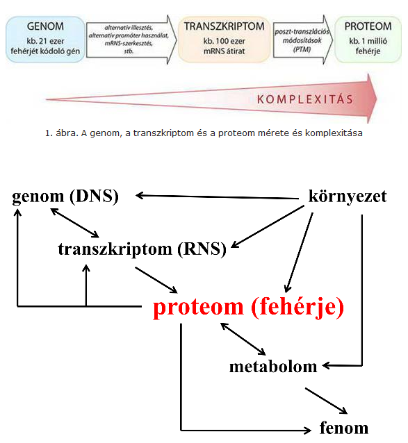
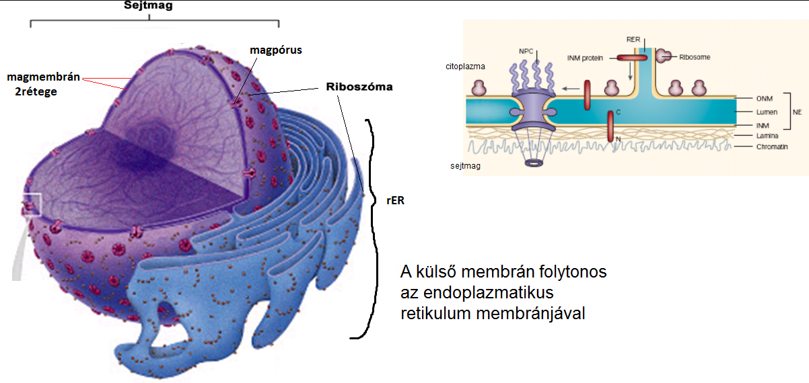
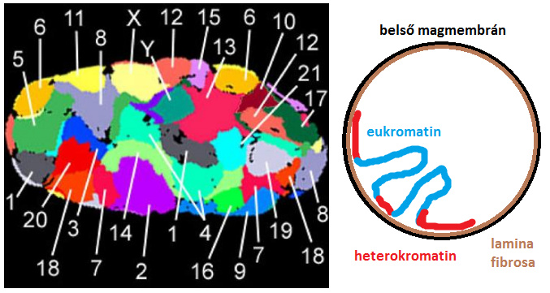

előadások
#1 Eukarióta és prokarióta sejt, a genetikai információ
általános
JR miért tanuljuk a molekuláris sejtbiológiát
- molekuláris medicina felé halad az orvostudomány
- ugyanis ezekkel egyre újabb és hatásosabb diagnosztikai és terápiás stb. módszerek jönnek létre
- pl molekuláris diagnosztika alapja, hogy a humán kórkép a génexpressziós mintázat megváltozásával jár (bizonyos fehérjékből több lesz, másokból meg kevesebb mint egészséges esetben) ➜ kikövetkeztethető mely gének működnek hibásan és génterápiával orvosolható (ez lenne az alapja)
- pl enzimhiányos kórképek ➜ fenilketonúria (fenil-alanin hiány)
- pl daganat ➜ daganatsejt génjei közül több is mutálódik ➜ azt kell megtalálni ami a legpenetránsabb, az ún driver gént (pl. Ras,p53,pRb) ➜ ezek száma nem nagy, 2-11/tumor ➜ ha ezeket sikerül szelektív terápiával "gátolni/megjavítani/eliminálni", akkor gyógyítható a daganat, mellékhatások nélkül
- pl fertőző betegség diagnosztikája ➜ pl. TBC-t régen több hét után tudták kimutatni ➜ ma azonban orrváladékból kimutatható 3órán belül, PCR-technikával (az derül vele ki, hogy ott van-e a genomja vagy nincs) ➜ terápia jóval előbb kezdődik meg
- pl antibiotikum ➜ fehérjéket/nukleinsavakat támadnak (ez is molekuláris sejtbiológia)
génváltozatok?
- máshogy nézünk ki, gondolkodunk
- betegségre való fogékonyság is különbözik ➜ pl. érelmeszesedés esélye van akinél nagyobb, depresszió stb.
- gyógyszerhatékonyság ➜ különböző dózist kell felírni, mert van akinek lassabban szívja fel a gyomor-bél traktus, van akinek gyorsan
- személyazonosság megállapítására is felhasználható
2 ember genomja kb. 0,1%-ban különbözik ➜ tehát a 3milliárd bázispárból 3millió különbözik ➜ ezért...
genom-fenom átmenet?
- genom ➜➜ transzkriptom ➜ proteom ➜ metabolom ➜ fenom
- reverz transzkripció ➜ RNS-ből is lehet DNS ✽
- genom ➜ egy kromoszómakészlet teljes DNS-szekvenciája (beleértve a nem kódolókat is!)
- transzkriptom ➜ RNS-készlet, tehát összes típusú RNS-ből 1
- proteom ➜ fehérjekészlet, tehát összes típusú fehérjéből 1
- metabolom ➜ kismolekulás metabolitok (anyagcseretermékek) összessége, pl. hormonok, jelzőmolekulák, aminosavak, egyszerű cukrok stb.
- fenomot a proteom és metabolom szabja meg
- környezet ➜ befolyásolja a genom-transzkriptom-proteomot és ezáltal a fenom különbözni fog egypetéjű ikreknél (hiába volt azonos a genom kezdetben)
- Mai ismereteink szerint a humán fehérjekészletet (proteom) mintegy 1 000 000 különböző fehérje alkotja. Könnyen belátható, hogy ennyi fehérje kódolására a körülbelül 21 000 fehérje-kódoló gént tartalmazó emberi genom nem képes. Olyan, a molekuláris komplexitást fokozó folyamatokra van tehát szükség, amelyek – a genomtól a proteomig – megsokszorozzák (k. 50-szerezik) a különböző molekulaféleségeket 
––––––––––––––––––––
––––––––––––––––––––
––––––––––––––––––––
––––––––––––––––––––
prokarióta és eukarióta szerveződés szintje?
- eukarióta eggyel magasabb szerveződési szintű
- ugyanis a membránok biztosítanak térben és időben differenciált működést

membránok csoportosítása?
- plazmamembrán
- intracelluláris membránok
- mitokondrium
- endomembránrendszer
- magmembrán és ER egymás folytatása
- vezikuláris transzport ER és Golgi között
- anterográd(ER➜G)
- retrográd(G➜ER)
- peroxiszóma és lizoszóma membránja az ER-ből származik !!

mitokondrium fő funkciói?(2)
- mitokondriális DNS/RNS/fehérje-szintézis
- ATP-termelés
Golgi fő funkciója?
- ER-ből érkező fehérjéket és lipideket átalakítja és válogatja ➜ továbbküldi (ER/plazmamembrán/késői_endoszóma)
- átalakítás során szénhidrátot adhat az anyaghoz ➜ pl. glikolipidet készít lipidből, glikoproteint fehérjéből
lizoszóma fő funkciója?
- savi hidrolázok, endogén és exogén anyagok lebontása ✽
peroxiszóma fő funkciói?(1+2)
- oxidációval lebontása az alábbiaknak ➜ zsírsavak, purin bázisok, aminosavak
- egyes toxikus anyagokat pl. etanolt,formaldehidet eloxidálva eliminálja
- alábbiak szintézise
- koleszterinéhez hozzájárul
- epesavakéhoz hozzájárul
- éter-lipidek szintézise csak itt van
- plazmalogén-szintézis első lépése
sER funkciói?(6)
| általános | speciális |
|---|---|
|
# foszfolipid-szintézis
# lipid-szintézis ➜ pl. koleszterin (májban különösen intenzív)
# Ca2+ tárolás ➜ harántcsíkolt izomban különösen intenzív!!!!
|
# szteroid-szintézis (mellékvesében,herékben,petefészekben)
# "méregtelenítés" (májban)
# glükóz-6-foszfát "lebontása" glükózzá + foszfátionná (májban)
|
rER funkciója?
- transzláció
sejtorganellumok felsorolása?(6)
- sejtmag
- mitokondrium
- ER
- Golgi
- lizoszóma
- peroxiszóma
kompartimentáció mi?
- prokariótákból evolúció során úgy lett eukarióta, hogy membránnal körülhatárolt kompartimentumok jöttek bennük létre
kompartimentáció "funkcionális" szemléltetése?
- céhek esetében egy ember() végezte az egész feladatot (kivágja a fát, kifaragja, lefesti és árusítja a széket)
- manufaktúra esetében csak egy szakaszát végzi egy ember(organellum) (van aki csak a fát vágja ki, van aki csak kifaragja stb.)
"céhek(prokarióta) vs. manufaktúra(eukarióta)" példáján jól bemutatható
kompartimentáció előnyei?
- a többi organellumra veszélyes anyagok,reakciók elkülönítése ➜ pl. peroxiszóma: H2O2-termelés és –lebontás
- magas lokális szubsztrátkoncentrációk, hatékony enzimreakciók (sorozatreakciók: pl. mitokondriális légzési lánc)
prokarióták tanulmányozásának jelentősége (aka miért foglalkozunk velük)?
- egyszerűbb a génexpresszió (1 RNS-polimeráz van, míg eukariótákban 3) ➜ modellezésnek jók
- ortológ ➜ két külön faj 1-1 génje akkor ortológ, ha a két faj közös ősében jelen lévő ősgénből származtatható, és mindkét fajban ugyanazt a funkciót látják el a fehérje, pl. bakteriális-topoizomeráz és humán-topoizomeráz ortológok, ?mert ősbaktériumok topoizomerázából származnak? ✽
- orvosi jelentőségük
- kórokozók ➜ eukariótáktól eltérő mechanizmusaik szelektíven támadhatók antibiotikumokkal ()
- felhasználhatók pl. inzulin előállítás
§ ezért alapvetően a prokariótáké lesz tárgyalva, és arra lesz ráépítve az eukariótáké
miért nehéz vírusellenes gyógyszereket fejleszteni?
- mert a vírus az eukarióta mechanizmusokat használja ki, így nincs olyan szer ami szelektíven a vírust támadná meg
- egyes vírusoknak van megfelelő kezelése már, pl. HIV (jó központban, időben, és nem a legagresszívebb törzs esetében nagy eséllyel gyógyítható már) ➜ ugyanis ez retrovírus, és más mechanizmussal működik
sejtmag
sejtmag felosztása?(17)
- magmembrán
- nukleoplazma
- nucleolus
- pars_amorpha
- pars_fibrosa
- pars_granulosa
- kromatin
- eukromatin
- heterokromatin
- konstitútív
- fakultatív
- interkromatin
- nukleoszol
➜ víz, stb. ➜ folyadékállomány
- nukleáris_mátrix
- nukleoszkeleton = ➜ ez adja a vázat
- lamina_fibrosa
- intranukleáris_filamentumok
- (nukleáris testek)
- (makromolekuláris testek)
fő funkciói?(2)
- replikáció ➜ DNS megkettőzés
- transzkripció ➜ RNS-szintézis
magmembrán "kapcsolata"?
- ER-el folytonos 
magmembrán hány rétegű?
- kettős membrán ➜ 4lipidréteg
nukleáris_lamina szinonima?
- lamina_fibrosa
nukleáris_lamina ➜ hol? funkció?
- belső magmembránhoz kapcsoltan ➜ belső_magmembránt kapcsolja kromatinhoz

nukleáris_lamina ➜ milyen típusú váz? alkotói és funkcióik?
- lamin A/C ➜ kromatinhoz kapcsolja
- lamin B ➜ belső_magmembránhoz kapcsolja
kromatin mi?
- interfázisos (sejciklusban) kromoszóma ➜ DNS + hozzá kapcsolódó fehérjék
kromatin felosztása ➜ funkció/szerkezet/EM képen?
| eukromatin | heterokromatin | |
|---|---|---|
| funkció | aktív ➜ transzkripciót végez | inaktív ➜ nincs transzkripcó |
| szerkezete | laza | tömör(feltekeredett) |
| EM képen | világos | sötét |

aktív_centrumok?
- fehérjegyárak ➜ eukromatin azon része, ahol nagyon intenzív a transzkripció
- kromoszóma úgy áll be, hogy az aktív_centrumba legyen az átírandó szakasz
- ✽
nucleolus ➜ milyen "állagú"? funkció?
- erősen heterokromatinos
- rRNS-szintézis
nmagpóruson mik jutnak át?
- 8alegységén diffúzióval ➜ ionok, kismolekulák
- centrális csatornán
- ki ➜ RNS + fehérjék
- be ➜ fehérjék (hisztonok,non-hisztonok,polimerázok, stb.)
transzkriptom vs genom?
- genom ➜ sejtben lévő DNS-összesége
- transzkriptom ➜ sejtben lévő RNS-összesége
- genom megegyezik összes sejtben, de a transzkriptom nem (se a proteom!)

mi látható?
- bal oldali sejt totipotens ➜ lehet belőle még bármilyen sejt
- jobb oldali sejt már differenciált
- látható, hogy a heterokromatin mértéke utóbbinál már jóval nagyobb, hisz nagyrészét már nem kell használja
hány gén van?
- 19300
heterokromatin ➜ típusai? jellemzésük (1szóval)?
- konstitutív ➜ transzkripció már sosincs ✽
- fakultatív ➜ ingerre átalakulhat eukromatinná !?
- ✽
- ha terhes a nő, akkor a tejmirigyek elkezdenek tejfehérjét termelni
- oka ➜ fakultatív_heterokromatin átalakul eukromatinná, terhesség után pedig visszaalakulnak
- férfiakban ez azonban mindvégig konstitutív
konstitútív & fakultatív szemléltetése 1pl-án?
kromoszómák helye interfázis során?
-

- minden kromoszóma specifikus helyet (nem random) foglal el a sejtmagban interfázisban is (kromatin formában)
- heterokromatin és eukromatin alapelhelyzekedése pedig a kép szimbolizálja ✽
prokarióták és eukarióták genomjának összehasonlítása?
- prokarióta ➜ 1db cirkuláris DNS ➜ néhány millió bázispár
- eukarióta ➜ 46db lineáris DNS(kromoszóma) diploid sejtnek ➜ 3,3milliárd bázispár / haploid sejt
prokariótákban alig van töltelék régió, nagyrésze kódol valamit ➜ eukariótákban
JR humán genom alapfogalmai

Giemsa-festés lényege?
- funkciója a kromoszóma sávozás
- ugyanis a heterokromatin jobban köti a festéket, így az sötétebb lesz (eukromatin világosabb)

Nukleinsavak ➜ biokémiánál dolgozom ki!! legyen valami copy script!